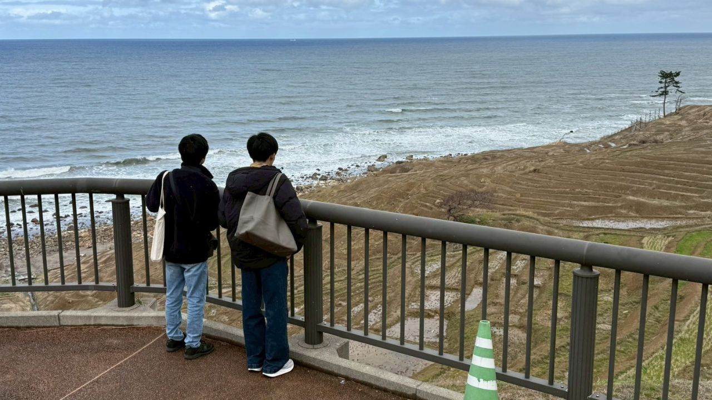
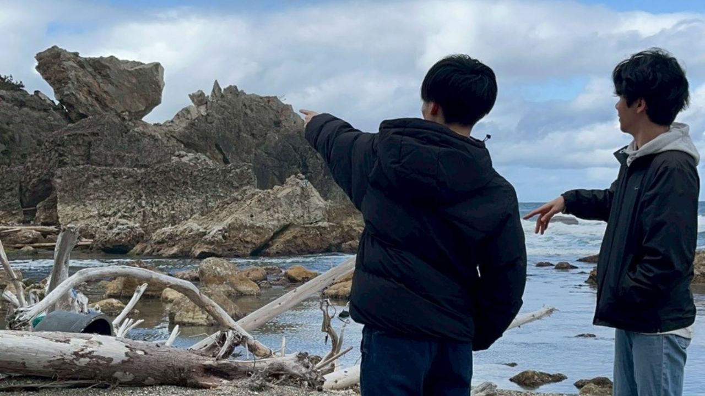
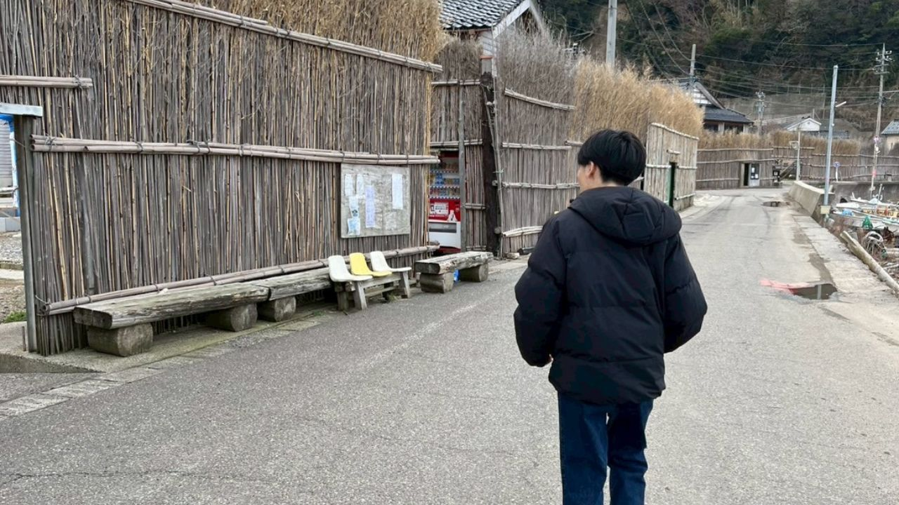
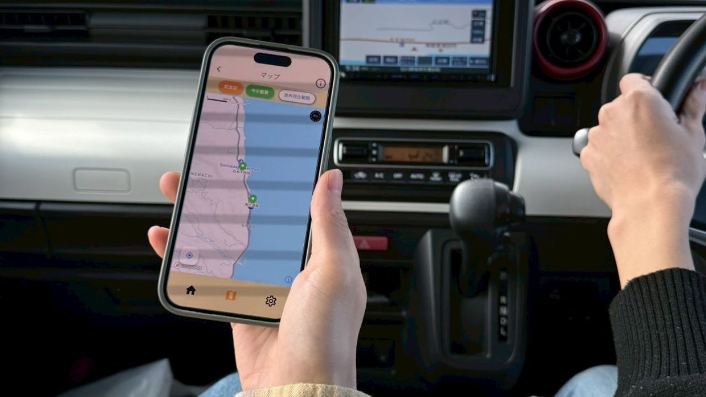
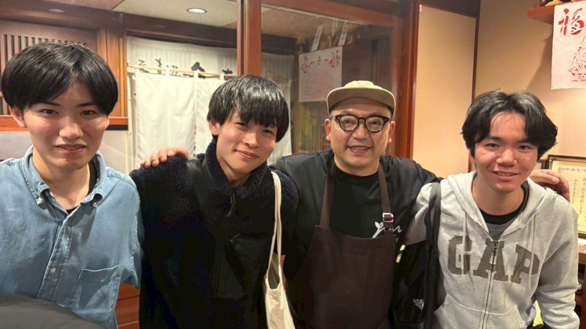
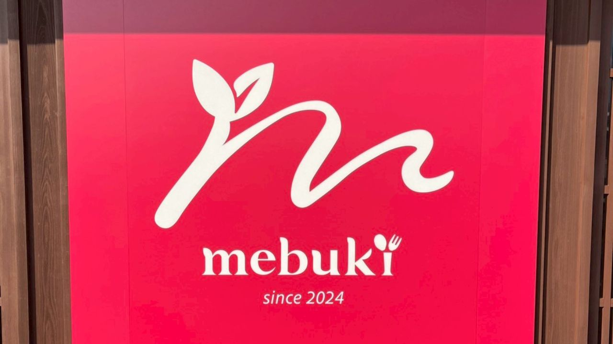
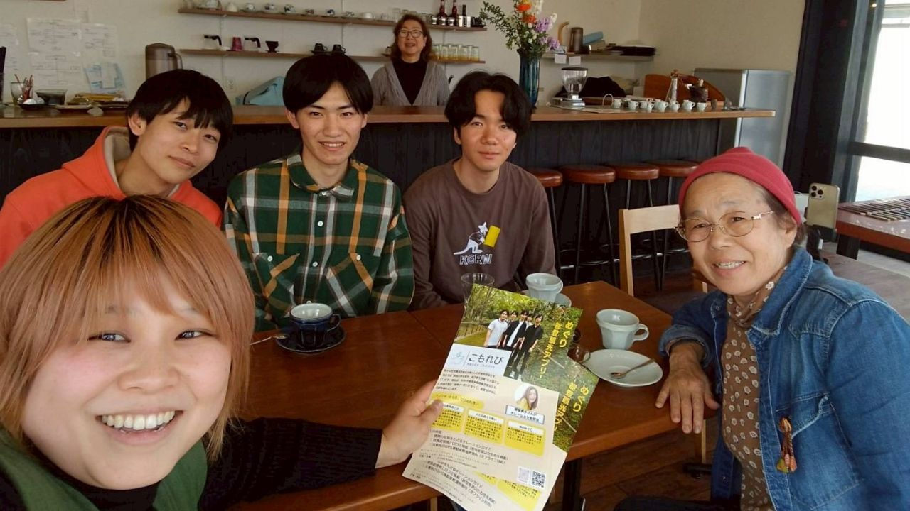
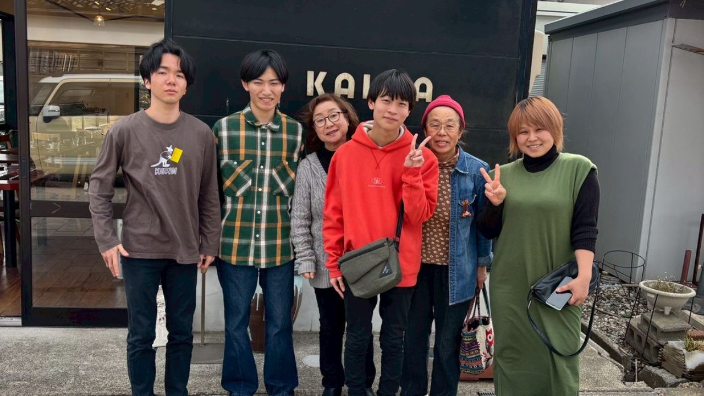
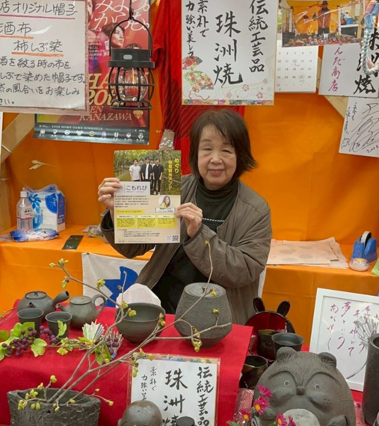
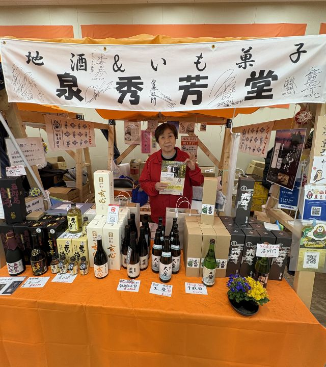

今回の調査では、これまで訪問したことのなかった大沢・上大沢地域にも足を運びました。また、国道249号の輪島〜珠洲間が開通したことにより、外浦沿いを通って輪島市街地から塩田村まで移動することができ、現地の変化を実感する機会となりました。
活動報告
能登半島にて現地調査を実施しました｜アプリのアップデートに向けて
2026年3月12日から3月17日にかけて、石川県の輪島市・珠洲市・能登町を訪れ、アプリのアップデートに向けた現地調査を実施しました。
本活動では、現地の魅力や現状を正確に把握し、より実用的なアプリを開発することを目的として、以下の取り組みを行いました。
・観光スポットの調査および写真撮影
・食店への掲載許可取得および写真撮影
・チラシの配布/設置
・現地でのインタビュー
・関係者とのミーティング




インタビューでは、「芽吹」の池端さん、「つばき茶屋」のお二人にご協力いただき、現地の想いや取り組みについて貴重なお話を伺いました。これらの内容は、今後アプリ内の動画コンテンツとして公開予定です。




さらに、輪島朝市にも訪問しました。現在はワイプラザ内で開催されており、震災後も形を変えながら継続されている様子を実際に見ることができました。


今回の調査を通して得た知見をもとに、能登の魅力や現状をより多くの方に伝えられるアプリ開発を進めてまいります。今後の展開にもぜひご期待ください。